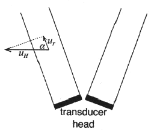
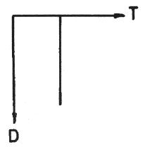
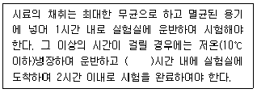
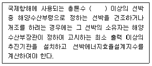

해양환경기사 (2022-04-24 기출문제)
1과목: 해양학개론
1. 중위도 해역의 해양에서 음속의 연직분포 중 최소의 음속을 보이는 곳은?
- 수심 20m 이전의 표층
- 수심 20 ~ 200m 의 계절약층
- 수심 1000m 이심의 심해 등온층
- 수심 1000 m 부근의 소파층(Sofar layer)
(정답률: 60%)

2. 해빈 퇴적물의 입자크기와 해빈의 평균 경사도의 관계로 가장 적합한 것은?
- 입자크기가 클수록 경사각이 작다.
- 입자크기가 클수록 경사각이 크다.
- 입자크기와 경사각에는 비례 관계가 없다.
- 입자크기와 경사각은 입자의 크기에 따라서 불규칙하다.
(정답률: 알수없음)
3. 퇴적물의 평균입도가 동일할 경우, 퇴적물의 분급과 공극률의 관계 중 맞는 것은?
- 분급이 좋을수록 공극률이 작다.
- 분급이 좋을수록 공극률이 크다.
- 분급과 공극률 간에는 관계가 없다.
- 평균입도는 분급 및 공극률에 영향을 미치지 않는다.
(정답률: 50%)
4. 해수중 침강입자를 모으는 기구로서 가장 적합한 것은?
- Sediment trap
- Millipore filter
- 무오염 채수기
- Van Dorn 채수기
(정답률: 70%)
5. 다음 장소 중 조력발전소 건설에 따라 최대전력의 생산이 가능한 장소는?
- 광양만
- 마산만
- 영일만
- 가로림만
(정답률: 60%)
6. 해저의 지반암에서 채취할 수 있는 에너지 자원으로 가장 가능성이 높은 것은?
- 석유
- 암염
- 석회암
- 망간단괴
(정답률: 알수없음)
7. Kelvin파에 대한 설명 중 틀린 것은?
- 진행속도는 수심에 관계된다.
- 조석파가 전파될 때 나타난다.
- 지구자전의 영향으로 나타난다.
- 북반구에서 해면변화는 파의 진행방향에서 왼쪽이 제일 크다.
(정답률: 50%)
8. 하천수에 많은 양의 용존 유기물과 Fe가 존재할 경우, 이 하천수가 하구를 지나면서 나타나는 용존 유기물과 Fe의 변화는?
- 용존 유기물질의 감소 및 Fe의 감소
- 용존 유기물질의 감소 및 Fe의 증가
- 용존 유기물질의 증가 및 Fe의 증가
- 용존 유기물질의 불변 및 Fe의 감소
(정답률: 50%)
9. 해수의 염분 증가에 가장 큰 영향을 미치는 과정은?
- 강우
- 증발
- 해수의 결빙
- 해빙의 융해
(정답률: 73%)
10. 해양에서 탄산염 퇴적물이 가장 많이 퇴적되어 있는 곳은?
- 해구
- 대양저 산맥
- 후열도 분지
- 북태평양 수렴대
(정답률: 알수없음)
11. 용승(Upwelling) 해역에 대한 설명 중 틀린 것은?
- 저층의 물이 표층으로 올라온다.
- 주변해역보다 표면 수온이 낮다.
- 영양염이 풍부하여 생물활동이 왕성하다.
- 해안선이 남북방향으로 놓인 곳에서는 용승이 있으나 동서방향으로 놓인 곳에서는 없다.
(정답률: 90%)
12. 계절풍에 대한 설명으로 가장 거리가 먼 것은?
- 계절에 따라 바람의 방향이 바뀐다.
- 위도에 따른 태양복사 에너지의 차이 때문에 생긴다.
- 아시아 대륙의 남쪽 및 남동 해상에서 현저하게 나타난다.
- 지구표면상의 대륙과 해양의 분포와 밀접하게 관련되어 있다.
(정답률: 알수없음)
13. 해양에 존재하는 영양염류의 농도분포에 대한 설명으로 틀린 것은?
- 영양염류 농도는 유광층에서 가장 낮다.
- 영양염류 농도는 표층에 비해 수심이 깊은 곳에서 낮다.
- 영양염류의 극대층은 수온약층 바로 아래수층에서 나타난다.
- 용승류가 발생하는 곳은 표층수의 영양염 농도가 주변 해역보다 높다.
(정답률: 알수없음)
14. 역학적 해류계산(dynamic current computation)에서 얻어지는 해류는?
- 조류
- 관성류
- 지형류
- 취송류
(정답률: 50%)
15. 북위 45°N 부근 중위도에서 100 km 떨어진 두 지점 A와 B에 수직인 방향으로 1m/s 유속의 지형류(geostrophic current)가 흐를 때 A점과 B점의 해면의 높이 차는? (단, Coriolis Parameter(f)는 f=10-4s-1, 중력가속도는 10m/s2 이다.)
- 0.5m
- 1m
- 1.5m
- 2m
(정답률: 70%)
16. 판구조론에서 말하는 판(plate)의 평균두께로 가장 적합한 것은?
- 10 ~ 50 km
- 100 ~ 150 km
- 400 ~ 500 km
- 800 ~ 1000 km
(정답률: 50%)
17. 내부파에 관한 설명으로 틀린 것은?
- 진폭이 표면파보다 작다.
- 해표면에는 slick을 자주 형성시킨다.
- 주기는 수분에서 수시간의 것까지 있다.
- 밀도가 불연속적인 경계면에서 나타난다.
(정답률: 64%)
18. 대양저산맥(mid-oceanic ridge)은 어원 그대로 대양의 중심부에 위치한다. 다음 중 중심부에 대양저산맥이 위치하지 않는 바다는?
- 대서양
- 인도양
- 태평양
- 모두 중심부에 위치하지 않음
(정답률: 70%)
19. 대기에서 해양으로 이동하는 기체의 확산계수에 대한 설명으로 틀린 것은?
- 분자확산계수는 온도에 비례한다.
- 분자확산계수는 기체 분자량과 비례한다.
- 와동확산계수가 분자확산계수보다 크다.
- 기체의 교환속도는 확산계수에 비례한다.
(정답률: 70%)
20. 해양에서 대기로 발산되는 열 중 가장 큰 것은?
- 반사열
- 복사열
- 전도열
- 증발잠열
(정답률: 60%)
2과목: 해양생태학
21. 심해생물의 직접적인 먹이가 되지 못하는 것은?
- 박테리아
- 회유성 어족
- 저층에 침전된 유기물
- 살아있는 식물 플랑크톤
(정답률: 알수없음)
22. 항온동물인 것은?
- 연체류
- 돌고래류
- 열대어류
- 바다거북류
(정답률: 80%)
23. 식물플랑크톤의 생물량에 관한 설명으로 옳지 않은 것은?
- 심층부보다 상층부에 많다.
- 외양보다 연안 수역에 많다.
- 한류수역보다 난류수역에 많다.
- 저위도보다 고위도 해역에 많다.
(정답률: 50%)
24. 소하성 회유어종이 야진 것은?
- 연어
- 은어
- 뱀장어
- 철갑상어
(정답률: 28%)
25. 플랑크톤과 유기쇄설물 등 미세한 먹이를 주로 먹는 어류는 새파가 길고 백택하게 나는데, 다음 어류 중 이러한 특징을 갖는 것은?
- 갈치
- 감성돔
- 실고기
- 정어리
(정답률: 50%)
26. 산호초에 관한 설명으로 옳지 않은 것은?
- 산호초가 형성되는 곳은 수온이 높고 수심이 얕아야 한다.
- 서식환경은 물이 깨끗하고 염분이 높아야. 한다.
- 산호초가 형성되기 위해서는 담수의 유입이 많아야 한다.
- 산호는 해파리와 같은 자포동물에 속하며 식물성 플랑크톤의 조류와 공생한다.
(정답률: 알수없음)
27. 일반적으로 강의 하구역에서 우점하는 해조류는?
- 갈조류
- 녹조류
- 홍조류
- 황색편모류
(정답률: 73%)
28. 해양의 1차 생산력을 지배하는 생물은?
- 어류 플랑크톤
- 저생생물
- 동물
- 식물 플랑크톤
(정답률: 알수없음)
29. 해양생물의 독성실험에 사용되는 용어의 뜻으로 옳은 것은?
- 48hEC50은 48시간 노출 시 실험생물의 50%가 사망하는 중간치사시간이다.
- 48hLD50은 48시간 노출 시 실험생물의 50%가 사망하는데 필요한 유효시간이다.
- 96hLC50은 96시간 노출 시 실험생물의 50%가 사망하는 독성물질 농도이다.
- 96hLT50은 96시간 노출 시 실험생물의 50%가 사망하는 중간유효농도이다.
(정답률: 70%)
30. 조간대 생물분포에 관한 설명으로 옳지 않은 것은?
- 조간대 생물분포는 해저 환경에 관계없이 고루 분포한다.
- 평균 저조면 부근과 평균 고조면 부근의 저서생물 분포가 다르다.
- 조간대의 지반이 암석인 경우와 흙인 경우의 저서생물 분포가 다르다.
- 흙으로 된 조간대 중 모래인 경우와 빨인 경우의 저서생물의 '분포가 다르다.
(정답률: 80%)
31. 해양 저서동물과 그 분류로 옳지 않은 것은?
- 성게 극피동물
- 따개비 연체동물
- 갯지렁이 다모류
- 바다가재 절지동물
(정답률: 90%)
32. 갯벌 조간대에 서식하는 저서생물들의 환경에 대한 적응으로 옳지 않은 것은?
- 부유하는 다량의 실트 성분은 현탁물 식자의 섭식율을 증가시킨다.
- 퇴적물 식자는 유기물 함량이 높은 이질 퇴적물에서 최대를 나타낸다.
- 간석지 이매패류는 패각 내에 고염분수를 가두어 둠으로서 단기적 저염분에 견딘다.
- 잠입성 이매패류는 퇴적물 속 깊은 장소에 서식하므로 대기 온도의 직접 영향을 피한다.
(정답률: 55%)
33. 갯벌생태계의 먹이연쇄에서 높은 영양단계에 속하는 포식자가 아닌 것은?
- 서해비단고등, 민칭이 등
- 가자미나 닙치 등의 저어류
- 도요새와 물떼새들로 구성되는 철새들
- 꽃게나 민꽃게 및 그 밖의 대형 새우류
(정답률: 46%)
34. 기초생산력을 직접적으로 좌우하는 요인이 아닌 것은?
- 광선
- 산소
- 온도
- 영양염류
(정답률: 64%)
35. 열수공 지역의 특징이 아닌 것은?
- 수온이 높다.
- 공생박테리아가 많다.
- 먹이연쇄가 발달되어 있다.
- 생물들이 대형화되어 있다.
(정답률: 30%)
36. 분류학적으로 다른 규조류는?
- 나비쿨라(Navicula)
- 니치치아(Nitzschia)
- 리조솔레니아(Rhizosolenia)
- 코시노디스커스(Coscinodiscus)
(정답률: 50%)
37. 다음 중 해양생태에서 높은 탁도의 가장 중요한 의미는?
- 여과식자에게 매우 좋다.
- 동물들의 숨을 막히게 한다.
- 태양광선의 투과를 감소시킨다.
- 포식자로부터 저서동물을 보호하기가 쉽다.
(정답률: 알수없음)
38. 플랑크톤 생활을 거치는 다음 생물 중 생활사가 다른 것은?
- 피낭류(Tunicata)
- 요각류(Copepoda)
- 익족류(Pteropoda)
- 화살발레류(Chaetognatha)
(정답률: 알수없음)
39. 우리나라 남해안 굴 양식장에 밀식과 연작으로 인해 나타나는 노화현상이 아닌 것은?
- 저층 빈산소 상태 유발
- 영양염이 유리되어 적조 발생
- 유화수소의 발생으로 생산력 저하
- 유기물 공급으로 저서동물의 생산량 증가
(정답률: 82%)
40. 간극동물의 일반적인 적응 특성으로 옳지 않은 것은?
- 몸의 크기가 작다.
- 주로 암반에 부착해 살아간다.
- 부착기와 평형기가 발달되어 있다.
- 몸이 길쭉하게 연장되면서 꾸불꾸불해진다.
(정답률: 40%)
3과목: 해양계측학
41. 취송류이론에 의한 상부마찰심도에서의 유속은 표면유속의 몇 분의 1인가?
- 약 1/7
- 약 1/15
- 약 1/23
- 약 1/57
(정답률: 46%)
42. 해수 내 부유물질의 측정방법이 아닌 것은?
- 여과법
- 희석법
- 광산란법
- 원심분리법
(정답률: 50%)
43. 어느 선박에서 음향 측심기로 음파를 발신하여 수신할 때까지의 시간이 10초일 때 수심은? (단, 해수 중의 음파속도는 약 1500 m/sec이며, 수면에서 송수파기까지의 길이는 3m임)
- 7497 m
- 7503 m
- 14997 m
- 15003 m
(정답률: 40%)
44. 시추한 해저 퇴적물의 구조 관찰에 가장 적합한 기기는?
- 편광 현미경
- soft X-ray 장치
- 감마선 감쇄장치
- 주자 전자현미경
(정답률: 50%)
45. ADCP는 그림과 같이 음향판에 수직한 방향의 속도성분(ur)을 측정하여 수평유속(uH)으로 환산한다. 이를 위해서 필요한 식은?

- uH = ur cos a
- uH = ur sin a
- uH = ur sec a
- uH = ur csc a
(정답률: 알수없음)
46. 조석자료의 분석에서 비조석성분이 특별히 큰 peak 값을 보이는 경우에 그 원인은?
- 단주기 성분의 중첩이 있다.
- peak 부근에 주기성이 있다.
- 잘못된 자료일 가능성이 크다.
- 조석 주기 이상의 장주기 성분에 의한 영향이다.
(정답률: 30%)
47. 대조(spring tide)와 다음 대조와의 시간간격은?
- 약 1/2일
- 약 1일
- 약 7일
- 약 15일
(정답률: 60%)
48. 염분계(salinometer)는 해수의 어떤 특성을 사용하여 염분을 측정하는가?
- 전기전도도
- 빛의 투과도
- 음파의 속도
- 해수의 색깔
(정답률: 64%)
49. 연안용승을 관측하기 위한 시·공간 해상도로 가장 알맞은 것은?
- 10km, 30일
- 100 km, 30 ~ 60일
- 10 ~ 100 km, 100일
- 10 ~ 100 km, 1일 ~ 1주
(정답률: 59%)
50. 조석 관측 시 필요한 TBM(Tidal Bench Mark)이란?
- 육상의 고정점 표식
- 평균해면의 표식
- 표척의 0점
- 조위계의 0점 표석
(정답률: 30%)
51. 퇴적물 분석 중 Pipette 이나 Sedigraph 는 어디에 사용되는 것인가?
- 조립질 시료의 입도분석
- 세립질 시료의 입도분석
- 조립질 시료의 중량 측정
- 세립질 시료의 중량 측정
(정답률: 70%)
52. 해저지층탐사 자료 해석 시 주의해야 할 것으로 해저면의 반복되는 현상은?
- 다중반사
- 불연속면
- 수중반사
- 수중잔향
(정답률: 40%)
53. 한국과 일본 사이의 동해상에서 발생할 수 있는 지진해일(tsunami)에 대비하기 위해 지진해일 감시용 압력계가 부착된 해양부이를 설치하려고 한다. 대피시간 확보와 해양부이 관리를 위한 접근 용이성 등을 고려하여 지진해일이 동해 연안에 도착하기 5분 전에 지진해일을 감지 할 수 있도록 해양부이 위치를 결정한다면 동해 연안에서 해양부이까지의 최단 거리는? (단, 동해의 수심은 전 해역에서 2000m이며, 해양부이를 통과한 지진해일은 연안에 수직방향으로 진행한다고 가정하며 마찰력의 효과는 무시한다.)
- 약 28 km
- 약 42 km
- 약 56 km
- 약 70 km
(정답률: 알수없음)
54. 변환기(transducer)를 사용하여 연안지역의 고해상도 퇴적층 단면도 자료를 획득하는 지층탐사 장비는?
- Air Gun
- Side scan sonar
- Multi beam echo sounder
- 3.5kHz subbottom profiler
(정답률: 50%)
55. GOCI-I 위성에 해당되는 사항이 아닌 것은?
- GOCI 위성은 한반도를 중심으로 관측한다.
- GOCI 위성은 1시간 간격으로 하루 8번 관측한다.
- GOCI 위성은 야간의 어선들 불빛을 관측하여 어업활동을 알 수 있게 한다.
- GOCI 위성은 Cochlodinium polykrikoides 적조를 관측하는 알고리즘을 운용한다.
(정답률: 알수없음)
56. 아래 그림과 같은 관측 결과를 우리나라의 황해에서 얻었다. 이러한 결과를 얻을 수 있는 계절은? (단, D는 수심이고, T는 수온이며, 특별한 경우는 제외한다.)

- 봄
- 여름
- 가을
- 겨울
(정답률: 50%)
57. 수심 H에서 온도 T, 압력 P, 염분도 S인 상태의 해수밀도를 수압이 0인 해수면 상태로 환원시켜 표시한 밀도는?
- 단열밀도
- 현장밀도
- 포텐셜밀도
- 시그마-티(σt)
(정답률: 알수없음)
58. 자유낙하 시추기(free fall corer)가 아닌 것은?
- Box Corer
- Gravity Corer
- Boomerang Corer
- Hydraulic Piston Corer
(정답률: 알수없음)
59. 해류측정에서 역학적 계산방법을 쓸 때 유의사항은?
- 평형상태면 된다.
- 지구의 중력만 고려한다.
- 비가속적이고 마찰이 없다.
- 코리올리효과는 무시하나 바람의 영향은 고려한다.
(정답률: 46%)
60. CTD 관측 방법에 대한 내용으로 틀린 것은?
- 장비 설명서에서 제시한 최적 하강속도를 준수한다.
- 장비를 해수면으로 투하한 후 바로 내리기 시작한다.
- 세밀한 연직구조를 관측하기 위해서 하강속도를 감소시킬 수 있다.
- 큰 파도에 선박의 운동이 심할 때에는 하강속도를 증가하는 것이 좋다.
(정답률: 37%)
4과목: 해수의 수질분석
61. 해양환경공정시험기준상 해양퇴적물의 강열감량(ignition loss)분석에 사용되는 기기가 아닌 것은?
- 전기로
- 전자저울
- 동결건조기
- 분광광도계
(정답률: 알수없음)
62. 해양환경공정시험기준상 분석 자료의 통계처리와 표현방법에 대한 일반적인 내용으로 틀린 것은?
- 일조분율을 표시할 때는 μg/L, μg/kg 또는 ppb의 기호를 쓴다.
- 백만분율을 표시할 때는 mg/L, mg/kg, mL/kL 및 ppm의 기호를 쓴다.
- 표준편차는 복수시료 측정 시 평균값을 중심으로 한 분산정도를 나타낸다.
- 유효숫자는 불확실할 수도 있는 마지막 자릿수의 숫자와 확실한 그 이상 자릿수의 숫자를 포함한다.
(정답률: 알수없음)
63. 해양환경공정시험기준상 해수중의 무기수은농도를 측정하는 방법의 설명으로 틀린 것은?
- 수은의 흡수파장은 253.7 nm 이다.
- 해수중의 수은은 냉중기-원자흡광광도계로 측정한다.
- 수은을 원자상태의 증기로 환원하는 데에는 히드록실아민(hydroxylamine)을 사용한다.
- 해수중의 수은농도는 매우 미량이기 때문에 HEPA 여과시설 및 수평기류가 가능한 청정시설 환경에서 실험해야 한다.
(정답률: 알수없음)
64. 해양환경공정시험기준에서 상온은 몇 ℃를 말하는가?
- 0℃
- 0 ~ 15℃
- 1 ~ 35℃
- 15 ~ 25℃
(정답률: 알수없음)
65. 해양환경공정시험기준상 황화수소가 산성용액에서 염산디메틸페닐랜디아민과 촉매로 쓰이는 염화제이철의 혼합용액과 반응한 후 생성되는 반응물의 흡광도를 분광광도계로 측정하고자 할 때 파장은?
- 370 nm
- 470 nm
- 570 nm
- 670 nm
(정답률: 알수없음)
66. 해수시료의 pH 측정에 관한 설명으로 틀린 것은?
- 적조가 발생하면 pH가 감소한다.
- pH는 해수중의 수소이온 농도 변화에 따라 달라진다.
- 해수의 총용존무기탄소 농도는 pH에 크게 영향을 준다.
- pH는 해수의 온도와 압력의 변화에 따라 측정값이 달라진다.
(정답률: 50%)
67. 해양환경공정시험기준상 해수 시료중의 규산염은 일차적으로 몰리브덴산과 반응하여 몰리브덴산 착화합물을 형성시켜 측정하는데, 이 때 시료 중에 포함되어 있는 몰리브덴산과 반응하여 몰리브덴산 착화합물을 만드는 다른 성분은?
- 바륨
- 인산염
- 질산염
- 코발트
(정답률: 55%)
68. 해양환경공정시험기준에 따른 해저퇴적물 시료 채취 시 고려사항으로 틀린 것은?
- 시료는 극소량을 취하여 분석할지라도 전체를 대표할 수 있어야만 한다.
- 해저퇴적물의 수평분포변화가 잘 나타날 수 있도록 채취지점의 간격과 수를 정한다.
- 각 조사항목에 필요한 시료의 양은 분석용량대비 2배 정도의 양을 채취한다.
- 시료는 각 조사항목에 따라 필요할 경우 동일 채취지점에서 시료를 반복 채취한다.
(정답률: 알수없음)
69. 미량금속의 분석기기로 사용되는 ICP-MS의 내부 표준용액으로 사용되는 것은?
- La
- Y-89
- Ra-226
- Rn-222
(정답률: 20%)
70. 해양환경공정시험기준상 Microtox bioassay 시험방법 중 염수추출법을 위한 퇴적물 시료 채집과 전처리 방법으로 틀린 것은?
- 시료는 4℃, 어두운 곳에서 보관한다.
- 채집 후 1개월 이내에 분석해야 한다.
- 정점 당 최소한 200g의 퇴적물을 확보한다.
- 용기 내에 빈 공간이 없도록 퇴적물을 가득 채워 채집한다.
(정답률: 30%)
71. 최확수시험법으로 대장균군 분석을 할 경우 검액량이 1 mL, 0.1 mL, 0.01 mL 일 때 1, 0, 0의 양성 시험관수의 최확수표가 5라고 한다면 검체의 최확수는?
- 5
- 50
- 500
- 5000
(정답률: 알수없음)
72. COD 측정값이 의미하는 것은?
- 총유기물질의 양을 나타내는 지표이다.
- 유독성 유기물질의 양을 나타내는 지표이다.
- 난분해성 유기물질의 양을 '나타내는 지표이다.
- 산소를 소모하는 유기물질의 양을 나타내는 간적접인 지표이다.
(정답률: 60%)
73. 해양환경공정시험기준상 해수의 분석방법 중 용매추출방법을 사용하지 않는 것은?
- PCBs
- 시안(CN)
- 엽록소-a
- 알킬수은
(정답률: 알수없음)
74. 해양환경공정시험기준상 암모니아성 질소 분석과정 중 해수인 경우 알칼리성(pH 9.6 이상)에서 칼슘 이온의 침전이 일어나는데 이를 방지하기 위한 조치는?
- 페놀 용액을 첨가한다.
- 차아염소산을 첨가한다.
- 구연산나트륨 용액을 첨가한다.
- 니트로프러시드 용액을 첨가한다.
(정답률: 28%)
75. 해양환경공정시험기준상 대장균군 시료채취에 관한 다음 설명 중 ( )안에 알맞은 내용은?

- 1
- 2
- 3
- 6
(정답률: 알수없음)
76. 해저퇴적물 중 중금속 성분을 분석하는데 있어 널리 사용되는 기기는 원자흡수 분광광도계이다. 이 기기를 사용할 때 각 물질과 중공음극관의 파장으로 틀린 것은?
- 구리 : 324.7 nm
- 망간 : 279.5 nm
- 아연 : 213.9 nm
- 알루미늄 : 248.3 nm
(정답률: 30%)
77. 해양환경공정시험기준상 해수시료 중 유기인계 농약의 분석조건이 아닌 것은?
- 기체크로마토그래프로 분석한다.
- 유기용매는 특급시약을 사용한다.
- 모든 초자기구는 세제와 증류수로 세척 후 건조시킨 다음 사용 시 분석 용매로 세척하여 사용한다.
- 유리컬럼은 길이 30.cm, 내경 1cm의 경질 유리관으로 하부에는 테프론 재질의 스톱콕이 상부에는 250mL용기가 부착된 것을 사용한다.
(정답률: 알수없음)
78. 해양환경공정시험기준상 대장균군의 정성시험 단계가 아닌 것은?
- 예비시험
- 완전시험
- 추정시험
- 확정시험
(정답률: 알수없음)
79. 해양환경공정시험기준상 냉증기-원자홉광광도법으로 수은 측정 시 시료 전처리에 사용되는 시약이 아닌 것은?
- 황산
- 과황산칼륨
- 염화제1주석
- 염산히드록실아민
(정답률: 알수없음)
80. 해양환경공정시험기준상 pH meter를 사용할 때 보정시기로 가장 적절한 것은?
- 1주일에 한번
- 한 달에 한번
- 세 달에 한번
- 측정 당일 시료측정 전
(정답률: 알수없음)
5과목: 해양관련법규
81. MARPOL 73/78(선박으로부터의 오염방지를 위한 국제협약)상 국제기름오염방지증서 (International Oil Pollution Protection Certificate)의 유효기간은?
- 3년
- 5년
- 7년
- 10년
(정답률: 40%)
82. 해양환경관리법상 검사대상선박의 소유자가 해양오염방지설비등을 교체·개조 또는 수리하고자 하는 때 받아야 하는 검사는?
- 정가검사
- 중간검사
- 임시검사
- 임시항해검사
(정답률: 알수없음)
83. 유류오염손해배상보장법상 유조선에 의한 유류오염 피해자는 국제기금의 보상한도액을 초과하는 유류오염손해에 대해서는 어떤 협약에 따라 보상을 청구할 수 있는가?
- 책임협약
- 국제기금협약
- 추가기금협약
- 선박연료유협약
(정답률: 20%)
84. MARPOL 73/78(선박으로부터의 오염방지를 위한 국제협약)상 기름(oil)의 정의로 가장 알맞은 것은? (단, 부속서Ⅱ의 규정에 따른 석유화학물질은 제외한다.)
- 원유만을 의미한다.
- 원유와 슬러지만을 의미한다.
- 선박 연료유와 윤활유만을 의미한다.
- 원유, 연료유, 슬러지, 폐유 및 정제유를 포함한 모든 형태의 석유를 의미한다.
(정답률: 80%)
85. MARPOL 73/78(선박으로부터의 오염방지를 위한 국제협약)상 선박 항행 중의 폐기물 처분에 관한 설명으로 틀린 것은?
- 특별해역 외의 지역에서 유리는 육지로부터 12해리 이상 떨어져 처분한다.
- 특별해역 외의 지역에서 음식찌꺼기는 육지로부터 12해리 이상 떨어져 처분한다.
- 특별해역 외의 지역에서 합성로우프는 육지로부터 25해리 이상 떨어져 처분한다.
- 특별해역 외의 지역에서 부유성 던니지(dunnage)는 육지로부터 25해리 이상 떨어져 처분한다.
(정답률: 알수없음)
86. 해양환경관리법상 선박에너지효율설계지수어 관한 설명이다. 다음 ( )안에 알맞은 내용은?

- 400톤
- 500톤
- 700톤
- 1000톤
(정답률: 46%)
87. MARPOL 73/78(선박으로부터의 오염방지를 위한 국제협약)상 해양학·생태학·해상교통의 특수성 등의 이유로 폐기물에 의한 해양오염 방지를 위하여 특별한 강제조치의 채택이 요구되는 특별해역에 포함되지 않는 곳은?
- 북해
- 발틱해
- 베링해
- 카리브해
(정답률: 40%)
88. 해양생태계의 보전 및 관리에 관한 법상 해양생물의 보호에 관한 설명으로 틀린 것은?
- 시·도지사는 해양동물의 구조·치료를 위하여 관련기관을 해양동물 전문구조·치료기관으로 지정할 수 있다.
- 어떠한 경우에도 해양보호생물의 멸종 또는 감소를 촉진하거나 학대를 유발할 수 있는 광고를 하여서는 아니 된다.
- 국가 또는 지방자치단체는 회유성해양동물 및 해양포유동물의 보전·관리를 위하여 전시관 및 교육·홍보관을 설치할 수 있다.
- 해양수산부장관은 유해해양생물로 인한 수산업 등의 피해상황, 유해해양생물의 종류 및 개체 수 등을 종합적으로 고려하여 유해해양생물을 관리하되, 해양생태계의 교란이 발생하지 아니하도록 하여야 한다.
(정답률: 50%)
89. 유류오염손해배상보장법상 연간 몇 톤을 초과하는 분담유를 수령할 경우에 해양수산부장관에게 보고하여야 하는가?
- 5만톤
- 10만톤
- 15만톤
- 20만톤
(정답률: 30%)
90. 해양환경관리법의 적용 대상이 아닌 배출물질은?
- 선저폐수
- 방사성물질
- 유해액체물질
- 포장유해물질
(정답률: 알수없음)
91. 해양환경관리법상 배출기준을 초과하는 오염물질이 배출된 경우 신고의무자가 아닌 자는?
- 기름이 배출된 선박의 선주
- 기름이 배출된 해양시설의 관리자
- 기름이 해면에 퍼져있는 것을 발견한 자
- 선박종사자가 아닌 자로 원인행위를 한 자
(정답률: 알수없음)
92. 해양환경관리법상 선박에 설치되는 해양오염방지설비에 대하여 수검하는 검사의 종류에 해당되지 않는 것은?
- 정기검사
- 중간검사
- 제조검사
- 임시검사
(정답률: 30%)
93. 1990년유류오염대비·대응및협력에관한국제 협약(ORPC)에서 요구하고 있는 오염사고 대응을 위한 국가방제체제에 포함된 요건이 아닌 것은?
- 유류오염 대응에 관한 책임당국 지정
- 일정규모 이상의 국가방제능력 확보 의무
- 유류오염 대비·대응을 위한 국가긴급계획 수립
- 방제조치 원조제공을 결정하는 자국 대표권한을 갖는 당국지정
(정답률: 30%)
94. 해양환경관리법상 선수 탱크와 충돌 격벽보다 앞쪽 탱크에 기름을 적재하는 것이 금지된 선박의 톤수 기준은?
- 총톤수 200톤 이상의 선박
- 총톤수 300톤 이상의 선박
- 총톤수 400톤 이상의 선박
- 총톤수 500톤 이상의 선박
(정답률: 알수없음)
95. 유류오염손해배상보장법상 보장계약을 체결하여야 할 선박은 몇 톤 이상의 산적 유류를 화물로 운송하는 선박인가?
- 100톤
- 200톤
- 500톤
- 1000톤
(정답률: 0%)
96. 해양환경관리법상 환경보전해역에 대한 사항이 아닌 것은?
- 오염물질의 총량규제를 할 수 있다.
- 대통령령이 정하는 시설의 설치를 제한할 수 있다.
- 해양오염에 직접 영향을 미치는 경우 육지를 포함한다.
- 생태계의 보전이 양호한 곳으로서 지속적인 보전이 필요한 해역이다.
(정답률: 40%)
97. 해양환경관리법상 해양시설의 소유자가 해양시설을 최초로 신고할 경우 첨부해야 할 서류에 해당하지 않는 것은?
- 해양시설 신고 증명서
- 해양시설오염비상계획서
- 해양시설해양오염방지관리인의 임명확인서
- 해양시설의 설치명세서와 그 도면 및 위치도
(정답률: 알수없음)
98. 해양환경관리법령상 해양시설에서 발생하는 오염물질로서 수거·처리하여야 하는 물질 중 기름의 유분 성분 기준은?
- 10만분의 5 초과
- 10만분의 15 초과
- 100만분의 5 초과
- 100만분의 15 초과
(정답률: 알수없음)
99. 유류오염손해배상보장법의 제정 목적으로 틀린 것은?
- 유류오염사고로 인한 피해자를 보호하기 위함이다.
- 유류오염사고로 인한 손해배상을 보장하는 제도를 확립하기 위함이다.
- 유류오염사고의 발생 시 선박소유자의 책임을 명확하게 하기 위함이다.
- 유류오염사고로 인한 국가 및 화주의 손해배상책임을 명확하게 하기 위함이다.
(정답률: 30%)
100. 유류오염손해배상보장법상 유조선에 의한 유류오염피해자가 유조선의 선박소유자 또는 보험자 등으로부터 배상을 받지 못한 유류오염손해 금액에 관하여 보상을 청구할 수 있는 대상은?
- 국제기금
- 피해자 소속국
- 선박소유자 소속국
- 가해선 선장 소속국
(정답률: 20%)